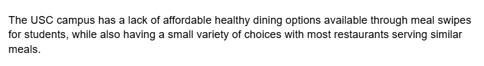
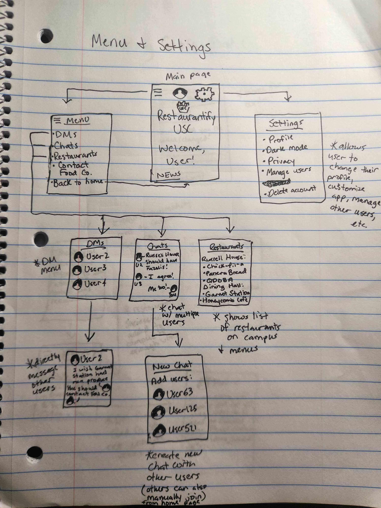

Highlighted projects
Problem Statement
The USC campus has a lack of affordable healthy dining options available through meal swipes for students, while also having a small variety of choices with most restaurants serving similar meals.
Affinity Diagram

Diagram shows ideas for a platform where USC students can communicate about what restaurants and dining hall options they want on campus. They would be able to give recommendations as well as see the ideas of others, and reach out to the Carolina Food Co. to try and get certain restaurants on campus.
Sketches
Sketch 1 shows the home page and the account creation process and log-in process for pre-existing accounts. Sketch 2 shows the main page as well as the menu and settings. The menu can be broken down into sections: DMs, Chats, and Restaurants. Users can chat with one another, either in a group or one-on-one, and can see what restaurants are already on campus. Sketch 3 shows the process of contacting Carolina Food Co. to get new restaurants on campus. Users give their email and what any recommendations they have, and their input is directly sent to Carolina Food Co. for review.
Algorithmic Design Retired Code
Retired code from CSCE 145